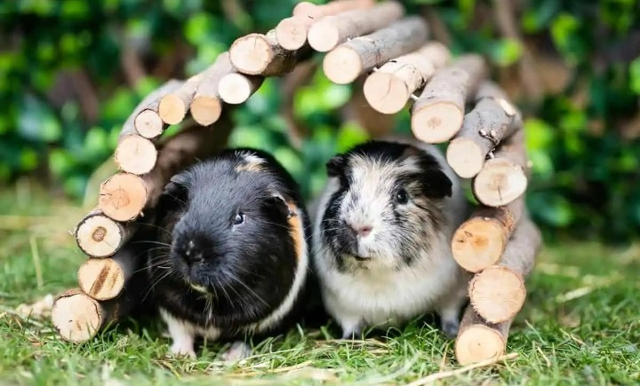
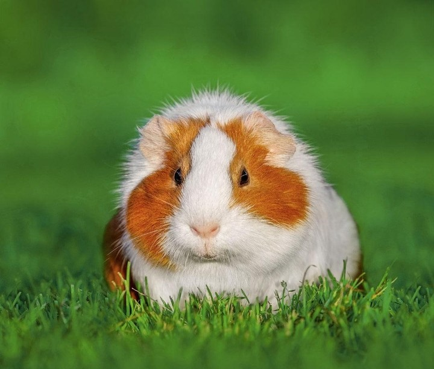

Guinea Pigs
Guinea pigs are small, social rodents known for their rounded bodies, short legs, expensive eyes, and distinctive sounds.
Although they are commonly kept as pets, guinea pigs originated in the South America.
Their wild ancestors are associated with the Andean region.
Guinea pigs have been domesticated for thousands of years and are now found in homes and animal-care facilities around the world.
Physical Characteristics:
Guinea pigs have compact bodies, short legs, small ears, and no external tails.
Their fur can be short or long, smooth or rough, and comes in many colours and patterns.
Despite their small size, guinea pigs are active animals with individual personalities.
Habitat:
Wild relatives of domestic guinea pigs originate from South American grasslands and mountains environments.
domestic guinea pigs need afe, clean, well-ventilated enclosures with enough space to move, hide, explore, and interact with other guinea pigs.
Diet:
Guinea pigs are herbivores.
Their diet commonly includes:
Their exact diet depends on the species and the food available in their environments.
Behaviour:
Many penguin species from colonies during breeding.
They communicate using calls and body movements.
Some species share responsibilities between parents when incubating eggs and caring for chicks.
Their powerful flippers and streamlined bodies make them excellent swimmers.
Amazing Penguin Facts:
Are Penguins Endangered?
Penguin conservation status varies by species.
Some face threat from climate change, changes in food availability, pollution, fishing activities, and habitat disturbance.
Protecting marine environments and reducing pollution can help support penguin populations.
Why Are Penguins Important?
Penguins are important parts of marine ecosystems.
They connect food webs by feeding on marine animals and serving as prey for some predators.
Studying penguins also helps scientists understand changes in the ocean conditions and marine environments.
Penguins remind us that birds can adapt to extraordinary environments. By protecting our oceans, we can safeguard their future.